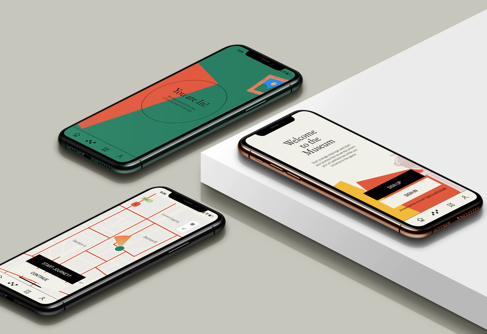
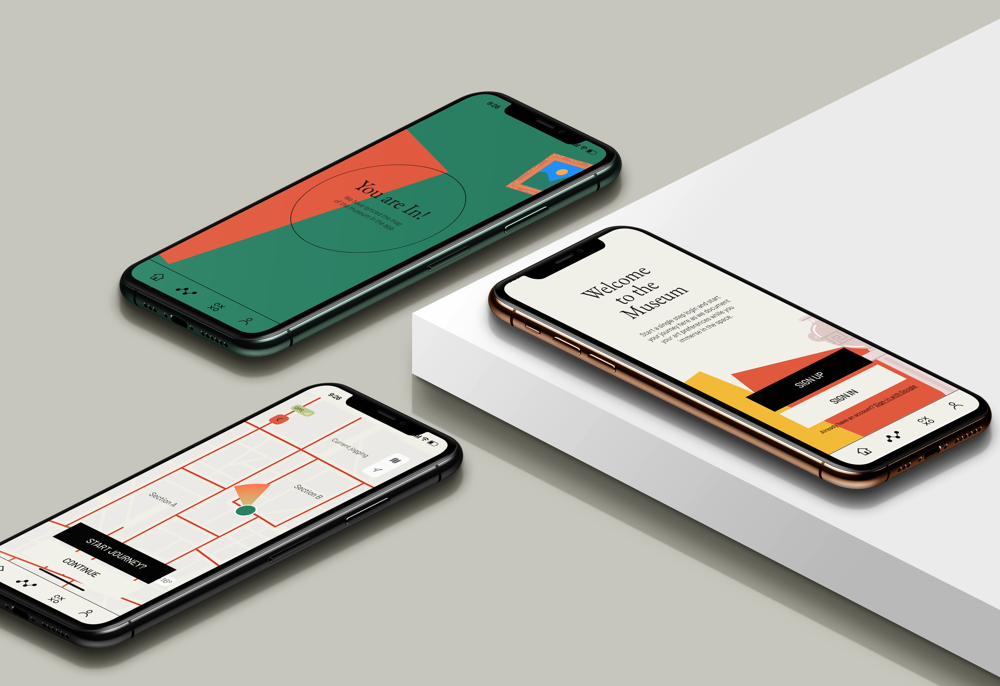

The App Framework is designed based on the insights encountered during my user research on people, conversation spaces, and their interaction. I took the following insights ahead “People do not recall their museum/exhibit visits so well, and they often feel overwhelmed while interacting with Conservation Spaces”. This insight helped me work on this passive documentation service which is guided by the user's movement and stay duration around artifacts. The app aims to make this interaction with a space more organised and intuitive by letting the User define their journey and simply organizing the data they prefer.
Collab
MPS Capstone- The New School
Duration
12 Weeks
Services
User Research
User Interface
Branding
User testing
 
